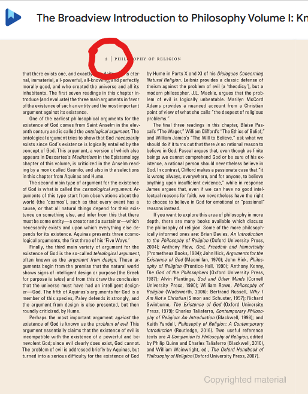
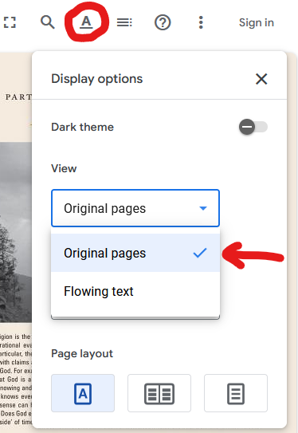
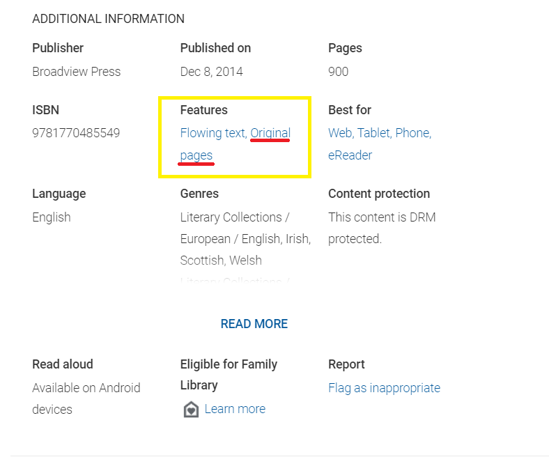

Citing the e-book
version of our textbook
.
Jeremy Anderson
.
Jeremy Anderson
Per the course academic integrity instructions, you should insert an in-text citation whenever you use words or even just ideas from a source, like this:
The three kinds of arguments used to show that God exists are ontological, cosmological, and teleological (Bailey, 2). Anselm describes God as "something than which nothing greater can be thought" (Anselm, 7). |
If your source has page numbers, like our textbook, you need to include the author and the page number. Using the e-book can make that a little challenging, because it might not automatically give you the correct page numbers.
Here's how to find the correct page numbers in our textbook.
If you are using a PDF of our textbook, the correct page numbers are at the top of each page:

If you're not using the PDF, first find the Display options or the Features menu and choose "Original pages." Here are two ways it might look:


You should now see images of the PDF of the book. The correct page numbers are the ones at the top of each page, as circled here:

OK? Whenever citing material from our textbook,
whether you quote it or not, please use those page
numbers.
As always, let me know if you have any questions.